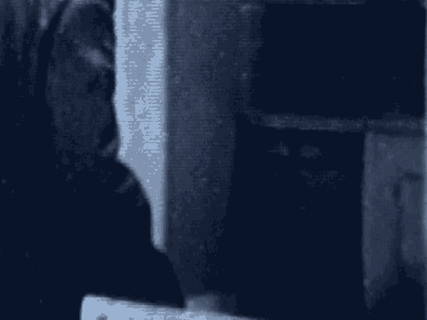

10 A. Sometimes, yes.
11 MR. DRATEL: I have nothing further, your Honor.
12 THE COURT: Anything further of this witness?
13 MR. KARAS: No, your honor.
14 THE COURT: Thank you, Detective Constable. You may
15 step down.
16 (Witness excused)
17 MR. KARAS: Your Honor, the government calls
18 Detective Sergeant Stephen Gregory.
19 STEPHEN CHARLES GREGORY,
20 called as a witness by the government,
21 having been duly sworn, testified as follows:
22 DEPUTY CLERK: Please state your full name.
23 THE WITNESS: My full name is Stephen Charles
24 Gregory. Gregory is spelled G-R-E-G-O-R-Y.
25 DEPUTY CLERK: Stephen with a P?
3423
1 THE WITNESS: With a P-H, yes.
2 DIRECT EXAMINATION
3 BY MR. KARAS:
4 Q. Good morning, Detective Sergeant.
5 A. Good morning.
6 Q. Can you tell us your current assignment.
7 A. Yes. My current assignment is that of the equivalent of a
8 police precinct which would be in this country involved in
9 criminal investigation.
10 Q. If you could just make sure you speak into the microphone
11 and speak loudly and clearly.
12 A. Of course.
13 Q. Thank you.
14 Can you tell us what assignment you had on September
15 23, 1998?
16 A. Yes. In September the 23rd, 1998, my assignment was to
17 act as an exhibits officer. At that time I was a member of
18 the antiterrorist branch.
19 Q. And did you participate in a search that day?
20 A. I did.
21 Q. And what location did you search?
22 A. The premises I searched were located at Lancefield
23 Studios, which was 1a Beethoven Street, which is London, the
24 Zip Code -- post code, as we call it -- West 10.
25 MR. KARAS: Your Honor, may I approach?
3424
1 THE COURT: Yes.
1